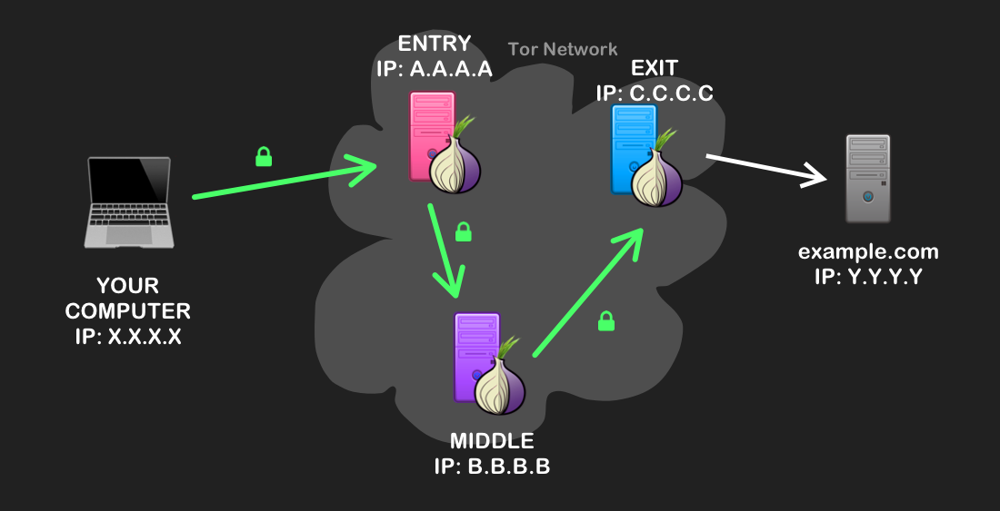
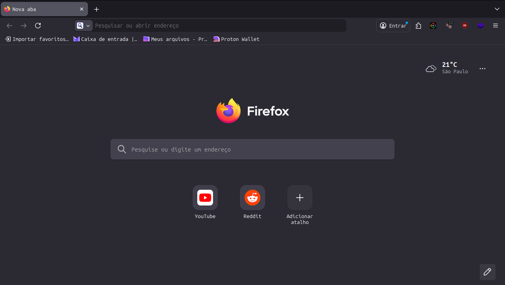
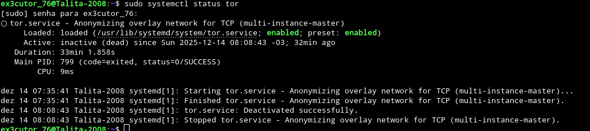

O que é a Rede tor?
Neste tópico você irá aprender um pouco sobre a rede tor, então... Se caso você
ficou curioso sobre a dark web e deep web, você irá ficar impressionado sobre a rede tor
e o quão segura ela pode ser.
Primeiro pra você ter ideia do que é a rede tor, a rede tor é uma rede voluntária e de código aberto
que protege a privacidade online através de camadas de criptografia e retransmissão de tráfego por
servidores voluntários .
No caso a rede tor ela meio que protege você através de camadas (Tanto que é por isso que o simbolo da rede
tor é a cebola.)
Como a rede tor funciona?
A rede tor funciona roteando o tráfego de internet através de múltiplos servidores voluntários (Relés) e criptografando-o
em camadas, no caso ela fica alterando seu IP a cada site que você entra, colocando 3 camadas.
Abaixo estará uma imagem de exemplo:

Curiosidades sobre a rede tor:
Sabia que se você está conectado a rede tor você não precisa de VPN? Pois é
a tor project até mesmo diz que não precisa de VPN já que se você se conecta a rede
tor, simplesmente tudo que a rede tor faz o VPN também faz, mas muitas pessoas experientes
juntam os dois por segurança mesmo, mas de uma coisa sabemos agora, não precisa de VPN já que
você está conectado na rede tor.
A rede tor veio de pesquisas da Marinha dos Estados Unidos (U.S Navy) e do laboratório
de pesquisa naval em 1990 que buscavam uma forma de comunicação anônima e segura na internet
e bem a ideia era proteger comunicações sensíveis de possíveis espionagens já que naquela época se passava
na guerra fria e assim nasceu a rede tor.
Atualização de 14/12/2025:
Sabia que é possível usar a rede tor no seu navegador? Pois é! Isso é possível e eu vou te mostrar como fazer isso.
 Primeiro passo é abrir o seu navegador, e relaxa não precisa ser só o firefox,
você pode usar qualquer navegador como o chrome, safari, librewolf ou qualquer outro.

Após isso entre nas configurações do seu navegador (No caso clicando em um simbolo que pode ter
3 pontos ou 3 barras dependendo do seu naveagador, que fica lá em cima perto da área onde você faz pesquisa).

Agora você vai tentar encontrar isso ou algo parecido como "Configuração de rede".

Agora quando você clicar pra configurar, nessa parte do proxy manual, selecione o domínio SOCKS
e utilize esse IP: 127.0.0.1, já a porta use a porta 9050 e ative SOCKS5 e claro abaixo também ative a opção "proxy DNS ao usar SOCKS v5" ou
se não tiver escrito isso vai estar escrito algo semelhante e após isso clique em "Ok".
Certo, aprendemos a usar o tor no navegador sem ser o tor, mas aqui vai um aviso, ele não garante total anônimato, então... Nem sempre é bom utilizar o tor
no navegador por questões que primeiro: O seu navegador que você utiliza no dia-a-dia não é o tor browser e segundo que também pode limitar alguns sites.
E sim eu ensinei isso a você porque achei interessante até que ponto a rede tor pode chegar.
Mas calma lá ainda não acabou, é possível usar a rede tor no Linux (Em alguns outros sistemas operacionais também) e aqui vai o tutorial:
Instale o tor usando o comando no terminal: sudo apt install tor
Use o comando: sudo systemctl status tor (Com esse comando você vai ver se está ativo ou não, abaixo terá uma imagem de exemplo)
 E você deve estar me perguntando "Como diabos você sabe que está conectado na rede tor com esse monte de texto?"
e muito simples meu caro visitante, se você perceber abaixo do "sudo" tem um circulo e a lógica é a seguinte: Se estiver verde, tá ativo e se estiver sem nada: Não está ativo
e como pode perceber não estou ativo na rede tor.
Use esse comando para ativar a rede tor: sudo systemctl start tor

Como pode perceber o círculo agora está verde, e então agora esou conectado na rede tor.
Comandos de configuração:
export http_proxy="socks5://127.0.0.1:9050" (Com esse comando você configura o tor para HTTP)
export https_proxy="socks5://127.0.0.1:9050" (Com esse comando você configura o tor para HTTPS)
export ftp_proxy="socks5"://127.0.0.1:9050" (Com esse comando você configura o tor para FTP)
Certo até mostrei como que se ativa o proxy da rede tor mas não ensinei a como desativar, e então aqui está:
No terminal use o comando: sudo systemctl stop tor (Com esse comando você desativa o proxy da rede tor)
Aviso: Não use tanto a rede tor para o dia-a-dia, já que o computador vai ficar lento devido a privacidade.
Bem, tem como ativar o proxy da rede tor no windows e no MacOS também, mas são de formas diferentes e até mais fáceis que o Linux
Se quiser saber o que é um Proxy entre no tópico: #Outras informações importantes#